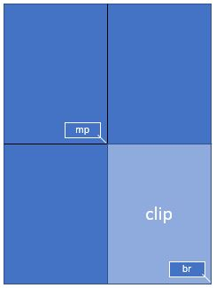
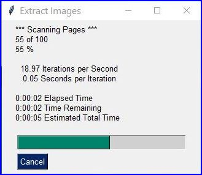
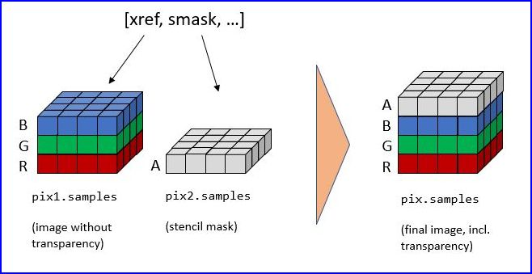
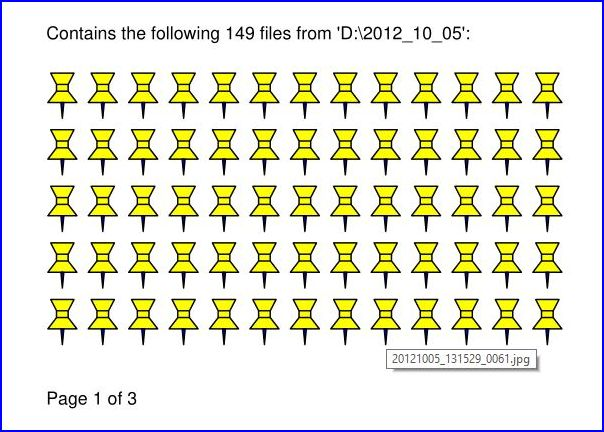

图片#
Images
如何从文档页面制作图像#
How to Make Images from Document Pages
这个小脚本将获取一个文档文件名，并生成每一页的PNG文件。
文档可以是任何 支持的类型。
该脚本作为命令行工具工作，期望将文件名作为参数传递。生成的图像文件（每页一个）将存储在脚本所在的目录中:
import sys, pymupdf # 导入绑定库
fname = sys.argv[1] # 从命令行获取文件名
doc = pymupdf.open(fname) # 打开文档
for page in doc: # 遍历页面
pix = page.get_pixmap() # 将页面渲染为图像
pix.save("page-%i.png" % page.number) # 将图像保存为PNG
脚本目录现在将包含名为 page-0.png、page-1.png 等的PNG图像文件。图片的尺寸与其页面相同，宽度和高度四舍五入为整数，例如A4纵向页面为595 x 842像素。它们的分辨率为96 dpi，且没有透明度。你可以更改这些设置——如何做到这一点，请阅读下一节内容。
This little script will take a document filename and generate a PNG file from each of its pages.
The document can be any supported type.
The script works as a command line tool which expects the filename being supplied as a parameter. The generated image files (1 per page) are stored in the directory of the script:
import sys, pymupdf # import the bindings
fname = sys.argv[1] # get filename from command line
doc = pymupdf.open(fname) # open document
for page in doc: # iterate through the pages
pix = page.get_pixmap() # render page to an image
pix.save("page-%i.png" % page.number) # store image as a PNG
The script directory will now contain PNG image files named page-0.png, page-1.png, etc. Pictures have the dimension of their pages with width and height rounded to integers, e.g. 595 x 842 pixels for an A4 portrait sized page. They will have a resolution of 96 dpi in x and y dimension and have no transparency. You can change all that – for how to do this, read the next sections.
如何提高 图像分辨率#
How to Increase Image Resolution
文档页面的图像由 Pixmap 表示，创建pixmap的最简单方法是通过方法 Page.get_pixmap()。
此方法有许多选项可以影响结果。其中最重要的是 Matrix，它允许你 zoom (缩放)、旋转、扭曲或镜像输出。
Page.get_pixmap() 默认使用 Identity 矩阵，这不会做任何事情。
接下来，我们将应用一个 zoom factor (缩放因子) 为2，作用于每个维度，这将为我们生成一个分辨率提高四倍的图像（同时图像大小也大约四倍）:
zoom_x = 2.0 # 水平缩放
zoom_y = 2.0 # 垂直缩放
mat = pymupdf.Matrix(zoom_x, zoom_y) # 每个维度的缩放因子为2
pix = page.get_pixmap(matrix=mat) # 使用'mat'代替单位矩阵
从版本1.19.2开始，有一种更直接的方式来设置分辨率：可以使用参数 "dpi" （每英寸点数）来代替 "matrix" 。要创建一个300 dpi的页面图像，指定 pix = page.get_pixmap(dpi=300) 。除了简洁的表示法外，这种方法还有一个额外的优点，即 dpi值会随图像文件一起保存 ——而使用Matrix表示法时，默认情况下并不会自动保存此值。
The image of a document page is represented by a Pixmap, and the simplest way to create a pixmap is via method Page.get_pixmap().
This method has many options to influence the result. The most important among them is the Matrix, which lets you zoom, rotate, distort or mirror the outcome.
Page.get_pixmap() by default will use the Identity matrix, which does nothing.
In the following, we apply a zoom factor of 2 to each dimension, which will generate an image with a four times better resolution for us (and also about 4 times the size):
zoom_x = 2.0 # horizontal zoom
zoom_y = 2.0 # vertical zoom
mat = pymupdf.Matrix(zoom_x, zoom_y) # zoom factor 2 in each dimension
pix = page.get_pixmap(matrix=mat) # use 'mat' instead of the identity matrix
Since version 1.19.2 there is a more direct way to set the resolution: Parameter "dpi" (dots per inch) can be used in place of "matrix". To create a 300 dpi image of a page specify pix = page.get_pixmap(dpi=300). Apart from notation brevity, this approach has the additional advantage that the dpi value is saved with the image file – which does not happen automatically when using the Matrix notation.
如何创建 Partial Pixmaps (部分像素图/剪辑)#
How to Create Partial Pixmaps (Clips)
您并不总是需要或想要页面的完整图像。例如，当您在图形用户界面（GUI）中显示图像，并希望用页面的放大部分填满相应窗口时，就是这样。
假设您的 GUI 窗口有足够的空间来显示一整页文档，但现在您想用页面右下角的四分之一区域填满这个空间，从而实现分辨率提高四倍的效果。
为了实现这一点，定义一个与您希望在 GUI 中显示的区域相等的矩形，并将其命名为“clip”。在 PyMuPDF 中构建矩形的一种方法是提供两个对角相对的角点，这正是我们在这里所做的。
- width:
50%
mat = pymupdf.Matrix(2, 2) # 每个方向上的缩放因子为 2
rect = page.rect # 页面矩形
mp = (rect.tl + rect.br) / 2 # 其中点，成为 clip 的左上角
clip = pymupdf.Rect(mp, rect.br) # 我们想要的区域
pix = page.get_pixmap(matrix=mat, clip=clip)
在上述代码中，我们通过指定两个对角相对的点来构建 clip：页面矩形的中心点 mp 及其右下角 rect.br 。
You do not always need or want the full image of a page. This is the case e.g. when you display the image in a GUI and would like to fill the respective window with a zoomed part of the page.
Let’s assume your GUI window has room to display a full document page, but you now want to fill this room with the bottom right quarter of your page, thus using a four times better resolution.
To achieve this, define a rectangle equal to the area you want to appear in the GUI and call it “clip”. One way of constructing rectangles in PyMuPDF is by providing two diagonally opposite corners, which is what we are doing here.
- width:
50%
mat = pymupdf.Matrix(2, 2) # zoom factor 2 in each direction
rect = page.rect # the page rectangle
mp = (rect.tl + rect.br) / 2 # its middle point, becomes top-left of clip
clip = pymupdf.Rect(mp, rect.br) # the area we want
pix = page.get_pixmap(matrix=mat, clip=clip)
In the above we construct clip by specifying two diagonally opposite points: the middle point mp of the page rectangle, and its bottom right, rect.br.
如何将剪辑缩放到 GUI 窗口#
How to Zoom a Clip to a GUI Window
请同时阅读上一节内容。这次我们要 计算裁剪区域的缩放因子 ，以便其图像能最佳适配给定的 GUI 窗口。这意味着，图像的宽度或高度（或两者）将与窗口尺寸相等。对于以下代码片段，您需要提供应接收页面裁剪矩形的 GUI 窗口的宽度和高度。
# WIDTH: GUI 窗口的宽度
# HEIGHT: GUI 窗口的高度
# clip: 文档页面的一个子矩形
# 比较图像和窗口的宽高比
if clip.width / clip.height < WIDTH / HEIGHT:
# 裁剪区域较窄：缩放至窗口高度
zoom = HEIGHT / clip.height
else: # 裁剪区域较宽：缩放至窗口宽度
zoom = WIDTH / clip.width
mat = pymupdf.Matrix(zoom, zoom)
pix = page.get_pixmap(matrix=mat, clip=clip)
反过来，现在假设您 已知 缩放因子，并需要 计算适配的裁剪区域 。
在这种情况下，我们有 zoom = HEIGHT/clip.height = WIDTH/clip.width，因此我们必须设置 clip.height = HEIGHT/zoom 和 clip.width = WIDTH/zoom。选择页面上裁剪区域的左上角点 tl 来计算正确的像素图:
width = WIDTH / zoom
height = HEIGHT / zoom
clip = pymupdf.Rect(tl, tl.x + width, tl.y + height)
# 确保我们仍在页面范围内
clip &= page.rect
mat = pymupdf.Matrix(zoom, zoom)
pix = pymupdf.Pixmap(matrix=mat, clip=clip)
Please also read the previous section. This time we want to compute the zoom factor for a clip, such that its image best fits a given GUI window. This means, that the image’s width or height (or both) will equal the window dimension. For the following code snippet you need to provide the WIDTH and HEIGHT of your GUI’s window that should receive the page’s clip rectangle.
# WIDTH: width of the GUI window
# HEIGHT: height of the GUI window
# clip: a subrectangle of the document page
# compare width/height ratios of image and window
if clip.width / clip.height < WIDTH / HEIGHT:
# clip is narrower: zoom to window HEIGHT
zoom = HEIGHT / clip.height
else: # clip is broader: zoom to window WIDTH
zoom = WIDTH / clip.width
mat = pymupdf.Matrix(zoom, zoom)
pix = page.get_pixmap(matrix=mat, clip=clip)
For the other way round, now assume you have the zoom factor and need to compute the fitting clip.
In this case we have zoom = HEIGHT/clip.height = WIDTH/clip.width, so we must set clip.height = HEIGHT/zoom and, clip.width = WIDTH/zoom. Choose the top-left point tl of the clip on the page to compute the right pixmap:
width = WIDTH / zoom
height = HEIGHT / zoom
clip = pymupdf.Rect(tl, tl.x + width, tl.y + height)
# ensure we still are inside the page
clip &= page.rect
mat = pymupdf.Matrix(zoom, zoom)
pix = pymupdf.Pixmap(matrix=mat, clip=clip)
如何创建或隐藏注释图像#
How to Create or Suppress Annotation Images
通常，页面的像素图也会显示页面的注释。有时，这可能并不理想。
要在渲染的页面上隐藏注释图像，只需在 Page.get_pixmap() 中指定 annots=False。
您也可以单独渲染注释：它们有自己的 Annot.get_pixmap() 方法。生成的像素图与注释矩形的尺寸相同 。
Normally, the pixmap of a page also shows the page’s annotations. Occasionally, this may not be desirable.
To suppress the annotation images on a rendered page, just specify annots=False in Page.get_pixmap().
You can also render annotations separately: they have their own Annot.get_pixmap() method. The resulting pixmap has the same dimensions as the annotation rectangle.
如何提取图像：非 PDF 文档#
How to Extract Images: Non-PDF Documents
与前面的章节不同，本节讨论的是 提取 文档中 包含 的图像，以便将它们作为一页或多页的一部分进行显示。
如果您想以文件形式或在内存区域中重现原始图像，基本上有两种选择：
将您的文档转换为 PDF，然后使用仅适用于 PDF 的提取方法。以下代码片段将文档转换为 PDF:
>>> pdfbytes = doc.convert_to_pdf() # 这是一个字节对象 >>> pdf = pymupdf.open("pdf", pdfbytes) # 将其作为 PDF 文档打开 >>> # 现在像处理任何 PDF 文档一样使用 'pdf'
使用带有 “dict” 参数的
Page.get_text()方法。这对所有文档类型都适用。它将以 Python 字典的形式提取页面上显示的所有文本和图像。每个图像都会出现在一个图像块中，其中包含元信息和 二进制图像数据 。有关字典结构的详细信息，请参阅 TextPage 。该方法对 PDF 文件同样有效。以下代码创建了一个列表，包含页面上显示的所有图像:>>> d = page.get_text("dict") >>> blocks = d["blocks"] # 块字典的列表 >>> imgblocks = [b for b in blocks if b["type"] == 1] >>> pprint(imgblocks[0]) { 'bbox': (100.0, 135.8769989013672, 300.0, 364.1230163574219), 'bpc': 8, 'colorspace': 3, 'ext': 'jpeg', 'height': 501, 'image': b'\xff\xd8\xff\xe0\x00\x10JFIF\...', # 注意：数据量大！ 'size': 80518, 'transform': (200.0, 0.0, -0.0, 228.2460174560547, 100.0, 135.8769989013672), 'type': 1, 'width': 439, 'xres': 96, 'yres': 96 }
In contrast to the previous sections, this section deals with extracting images contained in documents, so they can be displayed as part of one or more pages.
If you want to recreate the original image in file form or as a memory area, you have basically two options:
Convert your document to a PDF, and then use one of the PDF-only extraction methods. This snippet will convert a document to PDF:
>>> pdfbytes = doc.convert_to_pdf() # this a bytes object >>> pdf = pymupdf.open("pdf", pdfbytes) # open it as a PDF document >>> # now use 'pdf' like any PDF document
Use
Page.get_text()with the “dict” parameter. This works for all document types. It will extract all text and images shown on the page, formatted as a Python dictionary. Every image will occur in an image block, containing meta information and the binary image data. For details of the dictionary’s structure, see TextPage. The method works equally well for PDF files. This creates a list of all images shown on a page:>>> d = page.get_text("dict") >>> blocks = d["blocks"] # the list of block dictionaries >>> imgblocks = [b for b in blocks if b["type"] == 1] >>> pprint(imgblocks[0]) {'bbox': (100.0, 135.8769989013672, 300.0, 364.1230163574219), 'bpc': 8, 'colorspace': 3, 'ext': 'jpeg', 'height': 501, 'image': b'\xff\xd8\xff\xe0\x00\x10JFIF\...', # CAUTION: LARGE! 'size': 80518, 'transform': (200.0, 0.0, -0.0, 228.2460174560547, 100.0, 135.8769989013672), 'type': 1, 'width': 439, 'xres': 96, 'yres': 96}
如何提取图像：PDF 文档#
How to Extract Images: PDF Documents
与 PDF 中的任何其他“对象”一样，图像通过交叉引用编号（xref，一个整数）来标识。如果您知道这个编号，有两种方法可以访问图像的数据：
创建 图像的 Pixmap ，使用指令 pix = pymupdf.Pixmap(doc, xref) 。这种方法 非常 快（单数字微秒级）。pixmap 的属性（宽度、高度等）将与图像的实际属性相对应。在这种情况下，无法得知嵌入的原始图像是什么格式。
提取 图像，使用 img = doc.extract_image(xref)。这将返回一个包含二进制图像数据 img[“image”] 的字典。同时提供了许多元数据——大多与图像的 pixmap 中的信息相同。主要区别在于字符串 img[“ext”]，它指定了图像格式：除了 “png” 之外，还可能出现 “jpeg”、”bmp”、”tiff” 等字符串。如果您想将图像存储到磁盘，可以使用这个字符串作为文件扩展名。此方法的执行速度应与 pix = pymupdf.Pixmap(doc, xref); pix.tobytes() 组合语句的速度进行比较。如果嵌入的图像是 PNG 格式，
Document.extract_image()的速度大致相同（并且二进制图像数据也相同）。否则，此方法 快数千倍 ，并且 图像数据要小得多 。
问题仍然存在：“我如何知道这些图像的 ‘xref’ 编号？” 对此有两个答案：
“检查页面对象”：遍历
Page.get_images()的项。它是一个列表的列表，其项看起来像 [xref, smask, …]，包含图像的xref。然后可以使用上述方法之一使用此xref。对于 有效（未损坏） 文档使用此方法。不过请注意，同一图像可能被多次引用（由不同页面），因此您可能需要提供一种机制来避免多次提取。“无需知道”：遍历文档的所有 xref 列表，并对每个编号执行
Document.extract_image()。如果返回的字典为空，则继续——此xref不是图像。如果 PDF 已损坏（页面不可用），则使用此方法。请注意，PDF 通常包含用于定义其他某些图像透明度的“伪图像”（“模板蒙版”）。您可能需要提供逻辑来排除这些图像的提取。另请参阅下一节。
对于这两种提取方法，都存在现成的通用脚本：
extract-from-pages.py 按页提取图像：
{kind=link}
以及 extract-from-xref.py 按 xref 表提取图像：

Like any other “object” in a PDF, images are identified by a cross reference number (xref, an integer). If you know this number, you have two ways to access the image’s data:
Create a Pixmap of the image with instruction pix = pymupdf.Pixmap(doc, xref). This method is very fast (single digit micro-seconds). The pixmap’s properties (width, height, …) will reflect the ones of the image. In this case there is no way to tell which image format the embedded original has.
Extract the image with img = doc.extract_image(xref). This is a dictionary containing the binary image data as img[“image”]. A number of meta data are also provided – mostly the same as you would find in the pixmap of the image. The major difference is string img[“ext”], which specifies the image format: apart from “png”, strings like “jpeg”, “bmp”, “tiff”, etc. can also occur. Use this string as the file extension if you want to store to disk. The execution speed of this method should be compared to the combined speed of the statements pix = pymupdf.Pixmap(doc, xref);pix.tobytes(). If the embedded image is in PNG format, the speed of
Document.extract_image()is about the same (and the binary image data are identical). Otherwise, this method is thousands of times faster, and the image data is much smaller.
The question remains: “How do I know those ‘xref’ numbers of images?”. There are two answers to this:
“Inspect the page objects:” Loop through the items of
Page.get_images(). It is a list of list, and its items look like [xref, smask, …], containing thexrefof an image. Thisxrefcan then be used with one of the above methods. Use this method for valid (undamaged) documents. Be wary however, that the same image may be referenced multiple times (by different pages), so you might want to provide a mechanism avoiding multiple extracts.“No need to know:” Loop through the list of all xrefs of the document and perform a
Document.extract_image()for each one. If the returned dictionary is empty, then continue – thisxrefis no image. Use this method if the PDF is damaged (unusable pages). Note that a PDF often contains “pseudo-images” (“stencil masks”) with the special purpose of defining the transparency of some other image. You may want to provide logic to exclude those from extraction. Also have a look at the next section.
For both extraction approaches, there exist ready-to-use general purpose scripts:
extract-from-pages.py extracts images page by page:
- scale:
80
and extract-from-xref.py extracts images by xref table:
- scale:
80
如何处理图像蒙版#
How to Handle Image Masks
PDF 中的一些图像会配有 图像蒙版 。在最简单的形式下，蒙版以单独的图像形式存储表示透明度（alpha）的字节。为了重建带有蒙版的图像的原始图像，必须用从其蒙版中提取的透明度字节“丰富”该图像。
在 PyMuPDF 中，可以通过以下两种方式之一识别图像是否有这样的蒙版：
Document.get_page_images()的项具有通用格式(xref, smask, ...)，其中 xref 是图像的xref，如果 smask 为正数，则它是蒙版的xref。Document.extract_image()的（字典）结果有一个键 “smask” ，如果为正数，也包含任何蒙版的xref。
如果 smask == 0，则通过 xref 遇到的图像可以按原样处理。
要使用 PyMuPDF 恢复原始图像，必须执行如下所示的过程：
{kind=link}
>>> pix1 = pymupdf.Pixmap(doc.extract_image(xref)["image"]) # (1) 不带 alpha 的图像的 pixmap
>>> mask = pymupdf.Pixmap(doc.extract_image(smask)["image"]) # (2) 蒙版的 pixmap
>>> pix = pymupdf.Pixmap(pix1, mask) # (3) 添加了图像蒙版的 pix1 副本
步骤 (1) 创建基本图像的 pixmap。步骤 (2) 对图像蒙版执行相同的操作。步骤 (3) 添加一个 alpha 通道并用透明度信息填充它。
上述脚本 extract-from-pages.py 和 extract-from-xref.py 也包含此逻辑 。
Some images in PDFs are accompanied by image masks. In their simplest form, masks represent alpha (transparency) bytes stored as separate images. In order to reconstruct the original of an image, which has a mask, it must be “enriched” with transparency bytes taken from its mask.
Whether an image does have such a mask can be recognized in one of two ways in PyMuPDF:
An item of
Document.get_page_images()has the general format(xref, smask, ...), where xref is the image’sxrefand smask, if positive, then it is thexrefof a mask.The (dictionary) results of
Document.extract_image()have a key “smask”, which also contains any mask’sxrefif positive.
If smask == 0 then the image encountered via xref can be processed as it is.
To recover the original image using PyMuPDF, the procedure depicted as follows must be executed:
>>> pix1 = pymupdf.Pixmap(doc.extract_image(xref)["image"]) # (1) pixmap of image w/o alpha
>>> mask = pymupdf.Pixmap(doc.extract_image(smask)["image"]) # (2) mask pixmap
>>> pix = pymupdf.Pixmap(pix1, mask) # (3) copy of pix1, image mask added
Step (1) creates a pixmap of the basic image. Step (2) does the same with the image mask. Step (3) adds an alpha channel and fills it with transparency information.
The scripts extract-from-pages.py, and extract-from-xref.py above also contain this logic.
如何将所有图片（或文件）制作成一个 PDF#
How to Make one PDF of all your Pictures (or Files)
我们在此展示 三个脚本 ，它们可以将一系列（图像和其他类型的）文件合并到一个 PDF 文件中。
方法 1：将图像作为页面插入
第一个脚本将每张图像转换为一个具有相同尺寸的 PDF 页面。最终生成的 PDF 文件将每页显示一张图像。此方法仅适用于 支持的图像 文件格式:
import os, pymupdf
import PySimpleGUI as psg # 用于显示进度条
doc = pymupdf.open() # 创建一个新的 PDF 文档来存放图片
imgdir = "D:/2012_10_05" # 图片所在的目录
imglist = os.listdir(imgdir) # 获取图片文件列表
imgcount = len(imglist) # 图片数量
for i, f in enumerate(imglist):
img = pymupdf.open(os.path.join(imgdir, f)) # 将图片作为文档打开
rect = img[0].rect # 获取图片的尺寸
pdfbytes = img.convert_to_pdf() # 将图片转换为 PDF 流
img.close() # 不再需要原始图片文档
imgPDF = pymupdf.open("pdf", pdfbytes) # 将 PDF 流作为 PDF 文档打开
page = doc.new_page(width=rect.width, # 创建一个新页面，尺寸与图片相同
height=rect.height)
page.show_pdf_page(rect, imgPDF, 0) # 将图片页面填充到新页面上
psg.EasyProgressMeter("导入图片", # 显示进度条
i + 1, imgcount)
doc.save("all-my-pics.pdf")
这样生成的 PDF 文件大小仅比所有图片的总大小略大一些。以下是性能相关的一些数据：
在我的机器上，上述脚本处理 149 张总大小为 514 MB 的图片（生成的 PDF 大小也大致相同）大约需要 1 分钟。

更完整的源代码可以 在这里查看 ：它提供了一个目录选择对话框，并会跳过不受支持的文件和非文件条目。
备注
我们本可以使用 Page.insert_image() 方法代替 Page.show_pdf_page() 方法，最终生成的文件看起来也会类似。然而，根据图像类型的不同，这种方法可能会 以未压缩的形式存储图像 。因此，必须使用 deflate = True 保存选项才能获得合理的文件大小，但这会大幅增加处理大量图片时的运行时间。所以在此 不建议使用这种方法 。
方法 2：嵌入文件
第二个脚本可以 嵌入 任意文件 —— 不仅仅是图像。生成的 PDF 文件出于技术原因将只包含一个（空白）页面。若要之后再次访问这些嵌入的文件，您需要一个能够显示和/或提取嵌入文件的合适的 PDF 查看器:
import os, pymupdf
import PySimpleGUI as psg # 用于显示进度条
doc = pymupdf.open() # 创建一个新的 PDF 文档
imgdir = "D:/2012_10_05" # 文件所在的目录
imglist = os.listdir(imgdir) # 获取文件列表
imgcount = len(imglist) # 文件数量
imglist.sort() # 对文件进行排序
for i, f in enumerate(imglist):
with open(os.path.join(imgdir, f), "rb") as file:
img = file.read() # 读取文件内容形成字节流
doc.embfile_add(img, f, filename=f, # 嵌入文件
ufilename=f, desc=f)
psg.EasyProgressMeter("嵌入文件", # 显示进度条
i + 1, imgcount)
page = doc.new_page() # 至少需要一个页面
doc.save("all-my-pics-embedded.pdf")

这是迄今为止最快的方法，并且生成的输出文件大小也是最小的。上述图片在我的机器上处理耗时 20 秒，生成的 PDF 文件大小为 510 MB。更完整的源代码可以 在这里查看 ：它提供了一个目录选择对话框，并会跳过非文件条目 。
方法 3：附加文件
实现此任务的第三种方式是通过页面注释来 附加文件 ，完整的源代码可参考 这里 。
此方法的性能与上一个脚本相似，并且生成的文件大小也相近。它会生成带有 PDF 页面，每个附加文件对应一个“文件附件”图标。
备注
嵌入 和 附加 这两种方法都可用于 任意文件 —— 不仅仅局限于图像。
备注
对于可能需要较长时间运行的任务，我们强烈推荐使用出色的 PySimpleGUI 包来显示进度条。它是纯 Python 实现的，使用 Tkinter（无需额外的 GUI 包），并且只需多写一行代码！
We show here three scripts that take a list of (image and other) files and put them all in one PDF.
Method 1: Inserting Images as Pages
The first one converts each image to a PDF page with the same dimensions. The result will be a PDF with one page per image. It will only work for supported image file formats:
import os, pymupdf import PySimpleGUI as psg # for showing a progress bar doc = pymupdf.open() # PDF with the pictures imgdir = “D:/2012_10_05” # where the pics are imglist = os.listdir(imgdir) # list of them imgcount = len(imglist) # pic count
- for i, f in enumerate(imglist):
img = pymupdf.open(os.path.join(imgdir, f)) # open pic as document rect = img[0].rect # pic dimension pdfbytes = img.convert_to_pdf() # make a PDF stream img.close() # no longer needed imgPDF = pymupdf.open(“pdf”, pdfbytes) # open stream as PDF page = doc.new_page(width = rect.width, # new page with …
height = rect.height) # pic dimension
page.show_pdf_page(rect, imgPDF, 0) # image fills the page psg.EasyProgressMeter(“Import Images”, # show our progress
i+1, imgcount)
doc.save(“all-my-pics.pdf”)
This will generate a PDF only marginally larger than the combined pictures’ size. Some numbers on performance:
The above script needed about 1 minute on my machine for 149 pictures with a total size of 514 MB (and about the same resulting PDF size).
Look here for a more complete source code: it offers a directory selection dialog and skips unsupported files and non-file entries.
备注
We might have used Page.insert_image() instead of Page.show_pdf_page(), and the result would have been a similar looking file. However, depending on the image type, it may store images uncompressed. Therefore, the save option deflate = True must be used to achieve a reasonable file size, which hugely increases the runtime for large numbers of images. So this alternative cannot be recommended here.
Method 2: Embedding Files
The second script embeds arbitrary files – not only images. The resulting PDF will have just one (empty) page, required for technical reasons. To later access the embedded files again, you would need a suitable PDF viewer that can display and / or extract embedded files:
import os, pymupdf
import PySimpleGUI as psg # for showing progress bar
doc = pymupdf.open() # PDF with the pictures
imgdir = "D:/2012_10_05" # where my files are
imglist = os.listdir(imgdir) # list of pictures
imgcount = len(imglist) # pic count
imglist.sort() # nicely sort them
for i, f in enumerate(imglist):
img = open(os.path.join(imgdir,f), "rb").read() # make pic stream
doc.embfile_add(img, f, filename=f, # and embed it
ufilename=f, desc=f)
psg.EasyProgressMeter("Embedding Files", # show our progress
i+1, imgcount)
page = doc.new_page() # at least 1 page is needed
doc.save("all-my-pics-embedded.pdf")
- scale:
80
This is by far the fastest method, and it also produces the smallest possible output file size. The above pictures needed 20 seconds on my machine and yielded a PDF size of 510 MB. Look here for a more complete source code: it offers a directory selection dialog and skips non-file entries.
Method 3: Attaching Files
A third way to achieve this task is attaching files via page annotations see here for the complete source code.
This has a similar performance as the previous script and it also produces a similar file size. It will produce PDF pages which show a ‘FileAttachment’ icon for each attached file.
备注
Both, the embed and the attach methods can be used for arbitrary files – not just images.
备注
We strongly recommend using the awesome package PySimpleGUI to display a progress meter for tasks that may run for an extended time span. It’s pure Python, uses Tkinter (no additional GUI package) and requires just one more line of code!
如何创建矢量图片#
How to Create Vector Images
通常，从文档页面创建图像的方法是使用 Page.get_pixmap()。像素图（pixmap）表示光栅图像，因此在创建时必须确定其质量（即分辨率），之后无法更改。
PyMuPDF 还提供了一种以 SVG 格式（可缩放矢量图形，采用 XML 语法定义）创建页面 矢量图像 的方法。SVG 图像在不同缩放级别下都能保持精确（当然，其中嵌入的任何光栅图形元素除外）。
指令 svg = page.get_svg_image(matrix=pymupdf.Identity) 会返回一个 UTF-8 字符串 svg，可以将其以“.svg”作为扩展名进行存储 。
The usual way to create an image from a document page is Page.get_pixmap(). A pixmap represents a raster image, so you must decide on its quality (i.e. resolution) at creation time. It cannot be changed later.
PyMuPDF also offers a way to create a vector image of a page in SVG format (scalable vector graphics, defined in XML syntax). SVG images remain precise across zooming levels (of course with the exception of any raster graphic elements embedded therein).
Instruction svg = page.get_svg_image(matrix=pymupdf.Identity) delivers a UTF-8 string svg which can be stored with extension “.svg”.
如何转换图像#
How to Convert Images
就像众多功能中的一个，PyMuPDF 的图像转换非常简便。在很多情况下，它可以避免使用其他图形处理包，如 PIL/Pillow。
不过，与 Pillow 进行接口交互也几乎轻而易举。
输入格式 |
输出格式 |
描述 |
|---|---|---|
BMP |
. |
Windows 位图 |
JPEG |
JPEG |
联合图像专家组 |
JXR |
. |
JPEG 扩展范围 |
JPX/JP2 |
. |
JPEG 2000 |
GIF |
. |
图形交换格式 |
TIFF |
. |
可移植网络图形 |
PNG |
PNG |
可移植网络图形 |
PNM |
PNM |
可移植任意位图 |
PGM |
PGM |
可移植灰度图 |
PBM |
PBM |
可移植位图 |
PPM |
PPM |
可移植像素图 |
PAM |
PAM |
可移植任意映射 |
. |
PSD |
Adobe Photoshop 文档 |
. |
PS |
Adobe Postscript |
一般的操作流程仅如下两行代码所示:
pix = pymupdf.Pixmap("input.xxx") # 任意支持的输入格式
pix.save("output.yyy") # 任意支持的输出格式
备注
pymupdf.Pixmap(arg) 的 输入 参数可以是一个文件，也可以是一个包含图像的 bytes / io.BytesIO 对象。
除了输出 文件，您还可以通过 pix.tobytes(“yyy”) 创建一个 bytes 对象并进行传递。
当然，输入和输出格式在色彩空间和透明度方面必须兼容。如果需要调整，Pixmap 类已内置了相关功能。
备注
将 JPEG 转换为 Photoshop 格式:
pix = pymupdf.Pixmap("myfamily.jpg")
pix.save("myfamily.psd")
备注
将 JPEG 转换为 Tkinter PhotoImage。任何 RGB / 无 alpha 通道 的图像处理方式完全相同。转换为 可移植任意位图 格式（PPM、PGM 等）即可实现，因为所有 Tkinter 版本都支持这些格式:
import tkinter as tk
pix = pymupdf.Pixmap("input.jpg") # 或者任意 RGB / 无 alpha 通道图像
tkimg = tk.PhotoImage(data=pix.tobytes("ppm"))
备注
将 带 alpha 通道的 PNG 转换为 Tkinter PhotoImage。这需要在转换为 PPM 格式之前 移除 alpha 通道字节:
import tkinter as tk
pix = pymupdf.Pixmap("input.png") # 可能包含 alpha 通道
if pix.alpha: # 如果存在 alpha 通道！
pix = pymupdf.Pixmap(pix, 0) # 移除 alpha 通道
tkimg = tk.PhotoImage(data=pix.tobytes("ppm"))
Just as a feature among others, PyMuPDF’s image conversion is easy. It may avoid using other graphics packages like PIL/Pillow in many cases.
Notwithstanding that interfacing with Pillow is almost trivial.
Input Formats |
Output Formats |
Description |
|---|---|---|
BMP |
. |
Windows Bitmap |
JPEG |
JPEG |
Joint Photographic Experts Group |
JXR |
. |
JPEG Extended Range |
JPX/JP2 |
. |
JPEG 2000 |
GIF |
. |
Graphics Interchange Format |
TIFF |
. |
Tagged Image File Format |
PNG |
PNG |
Portable Network Graphics |
PNM |
PNM |
Portable Anymap |
PGM |
PGM |
Portable Graymap |
PBM |
PBM |
Portable Bitmap |
PPM |
PPM |
Portable Pixmap |
PAM |
PAM |
Portable Arbitrary Map |
. |
PSD |
Adobe Photoshop Document |
. |
PS |
Adobe Postscript |
The general scheme is just the following two lines:
pix = pymupdf.Pixmap("input.xxx") # any supported input format
pix.save("output.yyy") # any supported output format
Remarks
The input argument of pymupdf.Pixmap(arg) can be a file or a bytes / io.BytesIO object containing an image.
Instead of an output file, you can also create a bytes object via pix.tobytes(“yyy”) and pass this around.
As a matter of course, input and output formats must be compatible in terms of colorspace and transparency. The Pixmap class has batteries included if adjustments are needed.
备注
Convert JPEG to Photoshop:
pix = pymupdf.Pixmap("myfamily.jpg")
pix.save("myfamily.psd")
备注
Convert JPEG to Tkinter PhotoImage. Any RGB / no-alpha image works exactly the same. Conversion to one of the Portable Anymap formats (PPM, PGM, etc.) does the trick, because they are supported by all Tkinter versions:
import tkinter as tk
pix = pymupdf.Pixmap("input.jpg") # or any RGB / no-alpha image
tkimg = tk.PhotoImage(data=pix.tobytes("ppm"))
备注
Convert PNG with alpha to Tkinter PhotoImage. This requires removing the alpha bytes, before we can do the PPM conversion:
import tkinter as tk
pix = pymupdf.Pixmap("input.png") # may have an alpha channel
if pix.alpha: # we have an alpha channel!
pix = pymupdf.Pixmap(pix, 0) # remove it
tkimg = tk.PhotoImage(data=pix.tobytes("ppm"))
如何使用像素图：粘贴图像#
How to Use Pixmaps: Gluing Images
这展示了如何将像素图用于纯图形、非文档相关的用途。该脚本读取一幅图像文件，并创建一幅新图像，新图像由原始图像的 3×4 块拼贴组成:
import pymupdf
src = pymupdf.Pixmap("img-7edges.png") # 从图片创建像素图
col = 3 # 每行的块数
lin = 4 # 每列的块数
tar_w = src.width * col # 目标图像的宽度
tar_h = src.height * lin # 目标图像的高度
# 创建目标像素图
tar_pix = pymupdf.Pixmap(src.colorspace, (0, 0, tar_w, tar_h), src.alpha)
# 现在用块填充目标图像
for i in range(col):
for j in range(lin):
src.set_origin(src.width * i, src.height * j)
tar_pix.copy(src, src.irect) # 将输入图像复制到新位置
tar_pix.save("tar.png")
这是输入图片：

这是输出图片：

This shows how pixmaps can be used for purely graphical, non-document purposes. The script reads an image file and creates a new image which consist of 3 * 4 tiles of the original:
import pymupdf
src = pymupdf.Pixmap("img-7edges.png") # create pixmap from a picture
col = 3 # tiles per row
lin = 4 # tiles per column
tar_w = src.width * col # width of target
tar_h = src.height * lin # height of target
# create target pixmap
tar_pix = pymupdf.Pixmap(src.colorspace, (0, 0, tar_w, tar_h), src.alpha)
# now fill target with the tiles
for i in range(col):
for j in range(lin):
src.set_origin(src.width * i, src.height * j)
tar_pix.copy(src, src.irect) # copy input to new loc
tar_pix.save("tar.png")
This is the input picture:
Here is the output:
如何使用像素图：制作分形#
How to Use Pixmaps: Making a Fractal
这是另一个像素图（Pixmap）示例，用于创建 谢尔宾斯基地毯 ——一种将 康托集 推广到二维的分形图形。给定一个正方形地毯，在其上标记 9 个子正方形（3×3），然后移除正中间的那个。对剩下的八个子正方形重复同样的操作，并且无限循环下去。最终得到的图形面积为零，分形维数为 1.8928……
此脚本将其近似地创建为一个 PNG 图像，精度达到单个像素级别。若要提高图像精度，可以更改 n（精度）的值:
import pymupdf, time
if not list(map(int, pymupdf.VersionBind.split("."))) >= [1, 14, 8]:
raise SystemExit("需要 PyMuPDF v1.14.8 来运行此脚本")
n = 6 # 深度（精度）
d = 3**n # 边长
t0 = time.perf_counter()
ir = (0, 0, d, d) # 像素图的矩形区域
pm = pymupdf.Pixmap(pymupdf.csRGB, ir, False)
pm.set_rect(pm.irect, (255,255,0)) # 用某种背景色填充
color = (0, 0, 255) # 用于填充“挖空”部分的颜色
# 或者，为“挖空”部分定义一个填充用的像素图
# 这可以是任何内容，例如某张照片图像……
fill = pymupdf.Pixmap(pymupdf.csRGB, ir, False) # 与 'pm' 大小相同
fill.set_rect(fill.irect, (0, 255, 255)) # 填充某种颜色
def punch(x, y, step):
"""递归地在像素图的中心正方形中“挖洞”。
参数为左上角坐标和步长。
注释掉了一些其他的挖洞方法。
"""
s = step // 3 # 新的步长
# 遍历 9 个子正方形
# 正中间的那个将用指定颜色填充
for i in range(3):
for j in range(3):
if i!= j or i!= 1: # 不是中心正方形
if s >= 3: # 是否需要递归？
punch(x+i*s, y+j*s, s) # 递归调用
else: # 挖洞的替代方法：
pm.set_rect((x+s, y+s, x+2*s, y+2*s), color) # 用某种颜色填充
#pm.copy(fill, (x+s, y+s, x+2*s, y+2*s)) # 从 fill 复制内容
#pm.invert_irect((x+s, y+s, x+2*s, y+2*s)) # 反转颜色
return
#==============================================================================
# 主程序
#==============================================================================
# 现在开始在像素图中挖洞
punch(0, 0, d)
t1 = time.perf_counter()
pm.save("sierpinski-punch.png")
t2 = time.perf_counter()
print ("%g 秒用于创建 / 填充像素图" % round(t1-t0,3))
print ("%g 秒用于保存图像" % round(t2-t1,3))
结果应该类似于这样：
Here is another Pixmap example that creates Sierpinski’s Carpet – a fractal generalizing the Cantor Set to two dimensions. Given a square carpet, mark its 9 sub-suqares (3 times 3) and cut out the one in the center. Treat each of the remaining eight sub-squares in the same way, and continue ad infinitum. The end result is a set with area zero and fractal dimension 1.8928…
This script creates an approximate image of it as a PNG, by going down to one-pixel granularity. To increase the image precision, change the value of n (precision):
import pymupdf, time
if not list(map(int, pymupdf.VersionBind.split("."))) >= [1, 14, 8]:
raise SystemExit("need PyMuPDF v1.14.8 for this script")
n = 6 # depth (precision)
d = 3**n # edge length
t0 = time.perf_counter()
ir = (0, 0, d, d) # the pixmap rectangle
pm = pymupdf.Pixmap(pymupdf.csRGB, ir, False)
pm.set_rect(pm.irect, (255,255,0)) # fill it with some background color
color = (0, 0, 255) # color to fill the punch holes
# alternatively, define a 'fill' pixmap for the punch holes
# this could be anything, e.g. some photo image ...
fill = pymupdf.Pixmap(pymupdf.csRGB, ir, False) # same size as 'pm'
fill.set_rect(fill.irect, (0, 255, 255)) # put some color in
def punch(x, y, step):
"""Recursively "punch a hole" in the central square of a pixmap.
Arguments are top-left coords and the step width.
Some alternative punching methods are commented out.
"""
s = step // 3 # the new step
# iterate through the 9 sub-squares
# the central one will be filled with the color
for i in range(3):
for j in range(3):
if i != j or i != 1: # this is not the central cube
if s >= 3: # recursing needed?
punch(x+i*s, y+j*s, s) # recurse
else: # punching alternatives are:
pm.set_rect((x+s, y+s, x+2*s, y+2*s), color) # fill with a color
#pm.copy(fill, (x+s, y+s, x+2*s, y+2*s)) # copy from fill
#pm.invert_irect((x+s, y+s, x+2*s, y+2*s)) # invert colors
return
#==============================================================================
# main program
#==============================================================================
# now start punching holes into the pixmap
punch(0, 0, d)
t1 = time.perf_counter()
pm.save("sierpinski-punch.png")
t2 = time.perf_counter()
print ("%g sec to create / fill the pixmap" % round(t1-t0,3))
print ("%g sec to save the image" % round(t2-t1,3))
The result should look something like this:

如何与 NumPy 交互#
How to Interface with NumPy
这展示了如何从 NumPy 数组创建一个 PNG 文件（比大多数其他方法快几倍）:
import numpy as np
import pymupdf
# =============================================================================
# 使用 PyMuPDF 和 NumPy 创建一个具有趣味颜色的 width * height 大小的 PNG 图像
# =============================================================================
height = 150
width = 100
bild = np.ndarray((height, width, 3), dtype=np.uint8)
for i in range(height):
for j in range(width):
# 为每个像素设置一种有趣的颜色
bild[i, j] = [(i + j) % 256, i % 256, j % 256]
samples = bytearray(bild.tobytes()) # 从 NumPy 数组获取原始像素数据
pix = pymupdf.Pixmap(pymupdf.csRGB, width, height, samples, alpha=False)
pix.save("test.png")
This shows how to create a PNG file from a numpy array (several times faster than most other methods):
import numpy as np
import pymupdf
#==============================================================================
# create a fun-colored width * height PNG with pymupdf and numpy
#==============================================================================
height = 150
width = 100
bild = np.ndarray((height, width, 3), dtype=np.uint8)
for i in range(height):
for j in range(width):
# one pixel (some fun coloring)
bild[i, j] = [(i+j)%256, i%256, j%256]
samples = bytearray(bild.tostring()) # get plain pixel data from numpy array
pix = pymupdf.Pixmap(pymupdf.csRGB, width, height, samples, alpha=False)
pix.save("test.png")
如何将图像添加到 PDF 页面#
How to Add Images to a PDF Page
有两种方法可以将图像添加到 PDF 页面：Page.insert_image() 和 Page.show_pdf_page()。这两种方法有一些共同点，但也存在差异。
标准 |
||
|---|---|---|
可显示内容 |
图像文件、内存中的图像、像素图 |
PDF 页面 |
显示分辨率 |
图像分辨率 |
矢量化（除了栅格页面内容） |
旋转角度 |
0、90、180 或 270 度 |
任意角度 |
裁剪 |
不支持(仅显示完整图像) |
支持 |
保持纵横比 |
是(默认选项) |
是(默认选项) |
透明度(水印) |
取决于图像 |
取决于页面 |
位置/放置 |
缩放以适应目标矩形 |
缩放以适应目标矩形 |
性能 |
自动防止重复；支持多页图像 |
自动防止重复；支持多页图像 |
支持多页图片 |
不支持 |
支持 |
易用性 |
简单直观; |
简单直观； 在通过 |
Page.insert_image() 的基本代码模式
必须 给出参数 filename / stream / pixmap 中的 唯一一个 （如果不是重新插入现有图像）:
page.insert_image(
rect, # 图像放置的位置（矩形样式）
filename=None, # 文件中的图像
stream=None, # 内存中的图像（字节）
pixmap=None, # 来自像素图的图像
mask=None, # 单独指定 alpha 通道
rotate=0, # 旋转角度（整数，90 的倍数）
xref=0, # 重用现有图像
oc=0, # 通过 OCG / OCMD 控制可见性
keep_proportion=True, # 保持纵横比
overlay=True, # 置于前景
)
Page.show_pdf_page() 的基本代码模式
源 PDF 和目标 PDF 必须是不同的 Document 对象（但可以从同一个文件打开）:
page.show_pdf_page(
rect, # 图像放置的位置（矩形样式）
src, # 源 PDF
pno=0, # 源 PDF 中的页码
clip=None, # 仅显示此区域（矩形样式）
rotate=0, # 旋转角度（浮点数，任意值）
oc=0, # 通过 OCG / OCMD 控制可见性
keep_proportion=True, # 保持纵横比
overlay=True, # 置于前景
)
总结对比
Page.insert_image()灵活性：支持多种图像来源（文件、内存、像素图），适合直接插入各种格式的图像文件或已在内存中处理好的图像数据。
旋转限制：旋转角度只能是 0、90、180 或 270 度，相对固定。
裁剪能力：不支持裁剪操作，只能完整显示图像。
适用场景：适用于简单地添加独立的图像元素到 PDF 页面，比如在文档中插入标志、照片等。
Page.show_pdf_page()内容来源：专门用于将另一个 PDF 页面嵌入到当前 PDF 页面中，这对于整合多个 PDF 文档的内容非常有用。
旋转优势：可以实现任意角度的旋转，提供了更大的布局灵活性。
裁剪功能：支持只显示源 PDF 页面的特定区域，便于精确控制显示内容。
通用性：由于可以处理任何类型的 PDF 页面（包括包含图像的页面），在处理复杂文档结构和需要动态组合多个 PDF 文档内容时非常强大 。
There are two methods to add images to a PDF page: Page.insert_image() and Page.show_pdf_page(). Both methods have things in common, but there are also differences.
Criterion |
||
|---|---|---|
displayable content |
image file, image in memory, pixmap |
PDF page |
display resolution |
image resolution |
vectorized (except raster page content) |
rotation |
0, 90, 180 or 270 degrees |
any angle |
clipping |
no (full image only) |
yes |
keep aspect ratio |
yes (default option) |
yes (default option) |
transparency (water marking) |
depends on the image |
depends on the page |
location / placement |
scaled to fit target rectangle |
scaled to fit target rectangle |
performance |
automatic prevention of duplicates; |
automatic prevention of duplicates; |
multi-page image support |
no |
yes |
ease of use |
simple, intuitive; |
simple, intuitive;
usable for all document types
(including images!) after conversion to
PDF via |
Basic code pattern for Page.insert_image(). Exactly one of the parameters filename / stream / pixmap must be given, if not re-inserting an existing image:
page.insert_image(
rect, # where to place the image (rect-like)
filename=None, # image in a file
stream=None, # image in memory (bytes)
pixmap=None, # image from pixmap
mask=None, # specify alpha channel separately
rotate=0, # rotate (int, multiple of 90)
xref=0, # re-use existing image
oc=0, # control visibility via OCG / OCMD
keep_proportion=True, # keep aspect ratio
overlay=True, # put in foreground
)
Basic code pattern for Page.show_pdf_page(). Source and target PDF must be different Document objects (but may be opened from the same file):
page.show_pdf_page(
rect, # where to place the image (rect-like)
src, # source PDF
pno=0, # page number in source PDF
clip=None, # only display this area (rect-like)
rotate=0, # rotate (float, any value)
oc=0, # control visibility via OCG / OCMD
keep_proportion=True, # keep aspect ratio
overlay=True, # put in foreground
)
如何使用像素图：检查文本可见性#
How to Use Pixmaps: Checking Text Visibility
给定的某段文本是否实际在页面上可见取决于多个因素：
文本未被其他对象遮挡，但可能与背景颜色相同，例如白底白字等情况。
文本可能被图像或矢量图形覆盖。检测这一点是一项重要功能，例如用于发现匿名化处理不当的法律文件。
文本被设置为隐藏状态。这种技术通常被光学字符识别（OCR）工具用来将识别出的文本存储在页面的不可见图层上。
以下展示如何检测上述第 1 种情况，或者如果覆盖对象为单一颜色时检测第 2 种情况:
pix = page.get_pixmap(dpi=150) # 以合适的分辨率生成页面图像
# 以下矩阵将页面坐标转换为像素图坐标
mat = page.rect.torect(pix.irect)
# 查找某个字符串 "needle"
rlist = page.search_for("needle")
# 检查每个命中矩形的可见性
for rect in rlist:
if pix.color_topusage(clip=rect * mat)[0] > 0.95:
print("'needle' 在此处不可见：", rect)
方法 Pixmap.color_topusage() 返回一个元组 (ratio, pixel)，其中 0 < ratio <= 1，pixel 是该颜色的像素值。请注意，我们 仅创建一次像素图 。如果存在多个命中矩形，这样可以节省大量处理时间。
上述代码的逻辑是：如果包含 “needle” 的矩形区域内（“几乎” > 95%）为单一颜色，则该文本不可见。对于可见文本的典型结果会返回背景颜色（通常为白色）以及一个比例值在 0.7 到 0.8 左右，例如 (0.685, b'xffxffxff') 。
Whether or not a given piece of text is actually visible on a page depends on a number of factors:
Text is not covered by another object but may have the same color as the background i.e., white-on-white etc.
Text may be covered by an image or vector graphics. Detecting this is an important capability, for example to uncover badly anonymized legal documents.
Text is created hidden. This technique is usually used by OCR tools to store the recognized text in an invisible layer on the page.
The following shows how to detect situation 1. above, or situation 2. if the covering object is unicolor:
pix = page.get_pixmap(dpi=150) # make page image with a decent resolution
# the following matrix transforms page to pixmap coordinates
mat = page.rect.torect(pix.irect)
# search for some string "needle"
rlist = page.search_for("needle")
# check the visibility for each hit rectangle
for rect in rlist:
if pix.color_topusage(clip=rect * mat)[0] > 0.95:
print("'needle' is invisible here:", rect)
Method Pixmap.color_topusage() returns a tuple (ratio, pixel) where 0 < ratio <= 1 and pixel is the pixel value of the color. Please note that we create a pixmap only once. This can save a lot of processing time if there are multiple hit rectangles.
The logic of the above code is: If the needle’s rectangle is (“almost”: > 95%) unicolor, then the text cannot be visible. A typical result for visible text returns the color of the background (mostly white) and a ratio around 0.7 to 0.8, for example (0.685, b'xffxffxff').